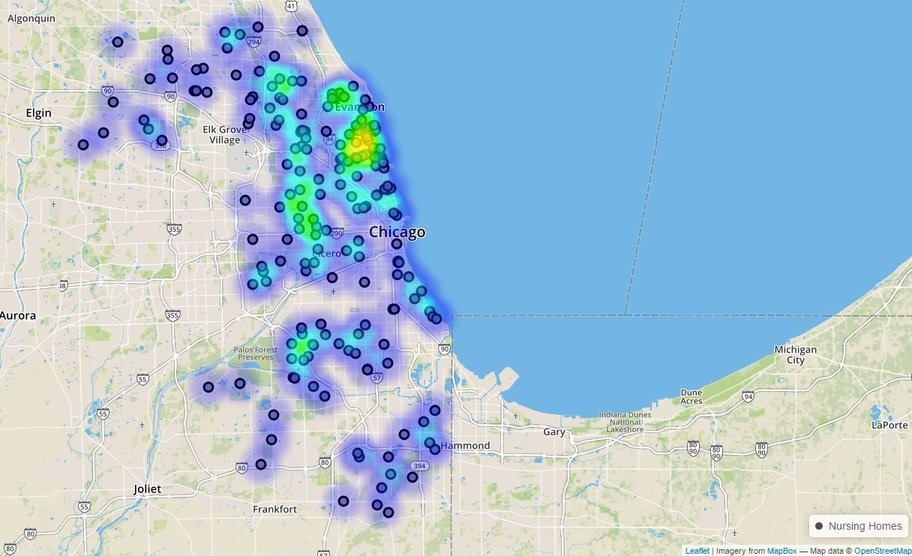

Table Grid
The table grid is located at the bottom of the map. The table becomes active when a search has been performed and returns a set of results on the map. To access the table, click on the black bar at the bottom of the map, there is a white carat displayed in the middle of bar below as an indicator that the bar is collapsible. After clicking on the bar, the table will expand upward exposing the table and its components.

Table Grid
Components of a Table Grid
Information Tab
Search Type (i.e. Place/Address, Business License).
Search Textbox
Used to filter by data components within the table.
Columns Icon
Provides a drop list of available columns pertaining to the data within the datasets. The columns are interchangeable; user can enable and disable certain columns from the table by selecting or deselecting each column name from the column list.
Export Icon
Provides a drop-list of available exportation options used to send or transfer data from the table into the following formats:
CSV - Comma Separated Values
PDF - Portable Document Format
MS Excel - Microsoft Excel
Heat Map
Data that’s contained in a matrix within a representation of colors to use for analysis, comparison or trending purposes. For full description see Heat Maps.

Tile Map
Small images, usually rectangular or isometric layers that acts as puzzle pieces to cover an intended area. For full description see Tile Maps.

Rows Droplist
Provides a drop list of total number of rows that can be displayed per page.
Page Numbers
Interactive number links for maneuvering through pages.